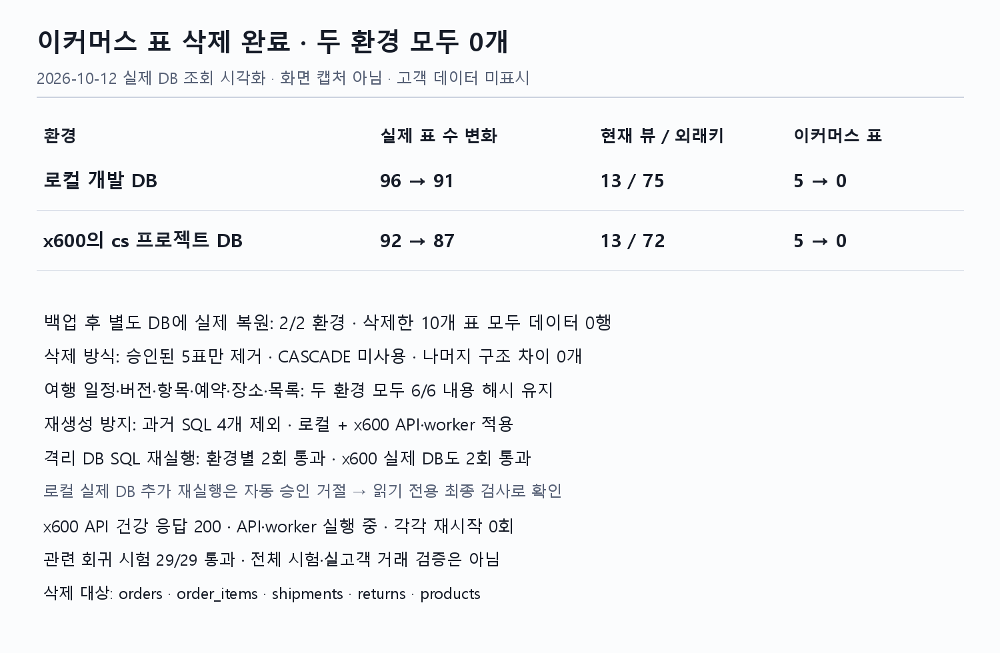

기존 문서 정정 반영 완료
현재 사양은 wiki, 계획서는 안내 자료
루트·cs 작업 규칙과 문서 입구를 wiki 정본으로 통일했습니다. 옛 계획 기록은 보존했습니다.
이미 반영한 작업의 결과입니다. 이전 수정 제안은 백업에 보존했으며 미실행 계획처럼 다시 표시하지 않습니다. 제품 구현·운영 배포 범위는 위 근거에 적힌 범위로 한정합니다.
triPilot · 현재 기준 정리 · 2026-10-11 · 수정 계획 v2
사용자 댓글 9개의 선택·책임·용어 지시를 기록했습니다. 문서 반영, 코드 구현, 운영 배포 상태를 나눠 표시합니다.
별도로 지정하지 않은 나머지 항목은 이 문서의 추천안으로 진행합니다. 기존 사용자 선택·정정을 우선합니다. 이 표시는 진행 기준의 확정이며, 각 항목의 문서 수정·코드 구현·배포 완료 여부는 항목별 상태로 확인합니다.
추가 댓글 6개를 반영했습니다. SQL 실제 현황·이미지·예시 전체 보기. 문서 반영과 제품 구현·배포 완료를 구분합니다.
| 할 일 | 상태 | 진행 |
|---|---|---|
| 이번 댓글 지시 기록 | 반영 완료 | 9/9 = 100% |
| 대상 항목 문서 수정 | 반영 완료 | 6/6 = 100% |
| 코드 구현·배포 | 항목별 표시 | 이번 집계 제외 |
읽는 법 — 각 항목의 반영 상태 → 확정 선택 → 쉬운 설명 → 남은 구현을 보시면 됩니다. 사용자 확정 선택은 이전 브라우저 저장값이나 기본안 복원으로 바뀌지 않습니다. 미확정 항목만 A안을 기본값으로 사용합니다.
아래 그림은 이번에 확정한 목표 책임입니다. 현재 코드에서 구현 차이가 확인된 부분은 W08에 적었습니다.
| 정확한 이름 | 하는 일 |
|---|---|
| 분류 에이전트 | 목표 계약의 판단 주체. 질의·계획·상황·사용자 성향으로 담당·순서·우선순위를 정합니다. 현재 라벨 분류만으로 이 전체 역할의 구현 완료를 증명하지 않습니다. |
| Controller | 현재 코드의 공통 실행 장치. 분류 모델 자체가 아니며 등록된 담당 실행·검증·반영을 진행합니다. |
| TeamRegistry | 등록·활성 정보를 대조해 담당을 찾고 실행 가능한지 확인합니다. 고객 성향을 판단하는 모델이 아닙니다. |
| TeamExecutorPort | 에이전트 팀 실행 계약. 실행 구현이 등록된 팀을 호출합니다. |
| Activity·Dining·Mobility 에이전트 팀 | 배정된 활동·식당·이동 업무의 계산·제안 담당. 다른 팀 전체의 순서 결정 주체가 아닙니다. |
| 모니터링 툴의 여행 상태 점검 | 외부 자료로 일정 문제를 발견합니다. 실행 간격은 설정값입니다. |
| 현재 WatchBatch·watch_planners | 현재 코드의 여러 문제 계산 처리와 계산 등록 지점. 고정 순서는 목표 계약과 다른 구현 상태로 기록합니다. |
| 운영자 웹 앱·운영 모니터링 화면 | 개발·QA의 정책 설정과 오류·지연 사후 분석 도구. 상주 상담원 업무 화면을 뜻하지 않습니다. |
이전 제안은 Claude Sonnet 5.5와 두 차례 검토한 이력입니다. 이번 사용자 결정은 이전 제안보다 우선합니다. 이번 정정에 새 Claude 검토를 받았다는 뜻은 아닙니다.
공식 자료는 인증·권한·로그·장애 격리 원칙의 근거입니다. 자동 여행 변경 범위, 후보 개수, 보존 일수, 확장 기준 수치는 우리 제품 정책·초기 제안이며 표준의 의무값이 아닙니다.
기존 문서 정정 반영 완료
루트·cs 작업 규칙과 문서 입구를 wiki 정본으로 통일했습니다. 옛 계획 기록은 보존했습니다.
이미 반영한 작업의 결과입니다. 이전 수정 제안은 백업에 보존했으며 미실행 계획처럼 다시 표시하지 않습니다. 제품 구현·운영 배포 범위는 위 근거에 적힌 범위로 한정합니다.
추천안 진행 승인·wiki 계약 반영 완료 · 구현·배포는 별도 검증
2026-10-12: 나머지 추천안 진행 승인에 따라 현재 wiki 계약을 반영했습니다. 실제 제품 코드·운영 배포 완료는 해당 인수 증거로 별도 판단합니다.
“별도 접점”을 지우고, 고객이 이용하는 화면과 API의 역할을 적습니다.
대체할 핵심 문장
고객은 triPilot 웹에서 여행 조건과 장소를 입력하고 일정을 구성·검토·수정한다. 개인 AI는 API/MCP로 본인 여행을 조회·처리한다. 공유 계획서 링크는 최신 일정을 읽는 화면이며 편집 권한을 주지 않는다.
수정할 문서·후속 구현 대상
wiki/product/scope.md · wiki/product/positioning.md · wiki/architecture/system-context.md · final_project_cs/wiki/external/rest-endpoints.md
끝났다고 판단할 검사
위 인용은 각 검토 시점의 문장입니다. v2에서 확인한 코드 근거에는 확인 시각과 해시를 별도로 기록했습니다. 실제 수정 직전에 파일과 줄을 다시 확인합니다.
추천안 진행 승인·wiki 계약 반영 완료 · 구현·배포는 별도 검증
2026-10-12: 나머지 추천안 진행 승인에 따라 현재 wiki 계약을 반영했습니다. 실제 제품 코드·운영 배포 완료는 해당 인수 증거로 별도 판단합니다.
항로 지킴이를 켜면 변경 필요 여부를 판단하고, 검증한 대체안을 적용한 결과를 제시합니다.
대체할 핵심 문장
항로 지킴이가 켜진 여행은 일반 사건에 대해 검증한 변경안을 자동 적용하고 변경 이유·결과·되돌리기를 제공한다. 고정 일정은 고객에게 확인한다. 재난은 대체 관광이 아니라 일정 정지와 공식 안전 안내로 처리하며 고객이 재개한다. 직접 켠 기록이 없는 여행은 자동 변경하지 않고 제안한다.
수정할 문서·후속 구현 대상
wiki/product/positioning.md · wiki/product/scope.md · wiki/decisions/D-020-trip-survey-and-ask-first.md · final_project_cs/wiki/external/rest-endpoints.md
끝났다고 판단할 검사
| 상황 | 처리 |
|---|---|
| 켜짐 + 일반 사건 | 검증한 변경 자동 적용 → 결과·이유·되돌리기 제공 |
| 꺼짐 + 일반 사건 | 검증한 대체안 제시 → 고객 선택 후 적용 |
| 고정한 일정 | 고객 확인 전 유지; 감지·알림은 계속 |
| 재난 정지 조건 | 일정 정지 + 공식 안내; 고객 명시 재개 |
| 업체 예약·결제 | 일정 DB 변경과 별개. 자동 변경 권한으로 실행하지 않음 |
| 설문 미응답 옛 여행 | 기본안: 꺼짐·제안. 실제 경로 검사와 기존 데이터 호환성 확인 후 적용 |
위 인용은 각 검토 시점의 문장입니다. v2에서 확인한 코드 근거에는 확인 시각과 해시를 별도로 기록했습니다. 실제 수정 직전에 파일과 줄을 다시 확인합니다.
B안 선택 반영 완료 · 개인 AI OAuth 구현·연결 검증 남음
개인 AI의 triPilot 연결은 키 복사 대신 로그인·권한 동의 방식까지 이번 구현 범위에 포함합니다. 선택·wiki 반영은 완료했지만 OAuth 구현 완료로 표시하지 않습니다.
고객이 개인 AI에서 triPilot을 처음 연결할 때 사용합니다. triPilot 로그인 화면에서 본인 계정으로 로그인하고, “여행 읽기” 또는 “여행 변경” 권한을 허용하면 개인 AI가 그 범위의 접근 토큰을 받는 방식입니다. 비밀번호를 개인 AI에 넘기지 않습니다.
예: 고객이 읽기만 허용하면 개인 AI는 이번 서울 여행을 조회할 수 있지만 일정을 수정할 수 없습니다. 연결을 해제하거나 토큰이 만료되면 접근을 거부합니다. 기존 구글 웹 로그인 구현은 개인 AI용 OAuth 구현 완료와 다릅니다.
구현 범위: 연결 안내·동의 화면, 인가 코드 교환·PKCE, 대상 자원·권한·소유자 검사, 만료·폐기, 실제 MCP 클라이언트 연결 시험.
MCP 공식 인증 사양의 HTTP 인증 흐름을 근거로 합니다.
현재 정본: final_project_cs/wiki/decisions/D-CS-012-agent-auth-claude-style.md
선택·문서 반영 완료 / 새 제품 코드 구현·운영 배포 완료 아님.
이 항목에서 “OAuth는 다음 단계”라는 이전 A안 작업 설명은 B안 채택으로 대체했습니다.
추천안 진행 승인·wiki 계약 반영 완료 · 구현·배포는 별도 검증
2026-10-12: 나머지 추천안 진행 승인에 따라 현재 wiki 계약을 반영했습니다. 실제 제품 코드·운영 배포 완료는 해당 인수 증거로 별도 판단합니다.
실시간 상담원 인계를 없애고, 자동 복구와 고객의 직접 해결을 지원하면서 결함 자료를 축적합니다.
대체할 핵심 문장
triPilot은 실시간 상담원 대기나 건별 수동 처리를 전제하지 않는다. 자동 해결이 어려운 고객 입력은 추천안과 함께 고객이 보완한다. 미매칭 장소·오류·건의는 접근이 제한된 사후 개선 기록으로 축적하며 가명 고객 ID에도 접근통제·보존기한을 둔다. 개발자의 설정·배포·QA는 유지보수이며 고객 처리의 대기 조건이 아니다.
수정할 문서·후속 구현 대상
wiki/delivery/dod.md · final_project_cs/wiki/decisions/D-CS-014-routing-reroute.md · final_project_cs/wiki/external/rest-endpoints.md · wiki/architecture/notifications.md · final_project_cs/frontend/apps/web/src/features/support/support.tsx · final_project_cs/frontend/apps/web/src/features/support/client.ts · final_project_cs/app/domains/travel_ops/modules/web_account/admin_customer_api.py · final_project_cs/app/domains/travel_ops/modules/web_account/web_cookie.py
끝났다고 판단할 검사
| 기록 종류 | 최소 항목 | 통제·주의 |
|---|---|---|
| 결함 묶음 | fingerprint, error_code, component, operation, first_seen, last_seen, count, status, fixed_revision | 지문은 오류 유형·컴포넌트·호출 작업·정규화한 원인으로 구성. 고객 ID를 지문에 넣지 않습니다. |
| 발생·영향 기록 | occurrence_id, fingerprint, occurred_at, tenant_id, customer_id, trip_id, item_id, trace_id, build_version, policy_version, source, retry_count, result | 고객·여행 ID는 가명 식별자여도 개인정보 관련 값입니다. 내부 권한으로만 조회하고 중복 수집은 occurrence_id로 막습니다. |
| 장소 미매칭 | 고객 입력명·주소 조각·검색 조건·검색 결과 ID·고객 보완 결과 | 주소·문장에 개인정보가 섞이면 마스킹합니다. 고객 입력을 검증 없이 공용 장소 목록에 반영하지 않습니다. |
| 고객 건의 | 건의 유형·마스킹한 내용·관련 여행/기능·접수 시각 | 장애 기록과 분리합니다. 건의 접수를 상담원 응답 보장이나 처리 완료로 표시하지 않습니다. |
| 보존·조회 제안 | 상세 30일·집계 90일, 설정으로 관리; 개발자·QA 조회 감사 기록 | 초기 정책 제안이며 법적 의무나 실측 최적값이 아닙니다. 기존 보존 정책과 정합성 확인 후 적용하고 이번에 데이터를 삭제하지 않습니다. |
| 금지 기록 | 키·쿠키·토큰·웹훅 주소·원문 인증 헤더·불필요한 고객 원문 | 오류 화면에는 고객용 코드와 다음 행동만 제공합니다. 스택과 내부 연결 정보는 노출하지 않습니다. |
| 진단 저장 장애 | 발생 ID를 유지한 제한된 로컬 영속 대기 파일·전송 상태·유실 건수 | 복구 후 중복 없이 전송합니다. 둘 다 저장 실패하면 수집 저하를 표시하며 영속 기록을 보장했다고 세지 않습니다. |
| 단계 | 구현·도입 조건 | 판정 근거·한계 |
|---|---|---|
| 지금 | 기존 DB의 구조화한 결함·발생·영향 기록 + 기존 작업자 | 이름만 있는 새 고객 지원 부서를 만들지 않습니다. 저장·조회 기능은 신규 구현 계획입니다. |
| 수집 작업자 분리 | 기록 쓰기 p95 100ms 초과 또는 배경 대기 p95 60초 초과가 15분 지속 | 초기 운영 가정값입니다. 부하 시험으로 조정합니다. 오류 때문에 고객 요청이 그만큼 느려지는지 먼저 측정합니다. |
| 반복 오류 폭주 억제 | 같은 결함 상세는 시간창별 대표 표본, 건수·영향 고객은 정확히 유지 | 안전 사건은 일반 건의와 우선순위를 분리합니다. 수집 대기열은 상한·유실 감지·재전송 중복 방지가 필요합니다. |
| DB 저장 구조 확장 | 보존 정리 지연·색인 조회 지연·쓰기 병목이 목표를 지속 위반 | 그때 시간별 분할/저장소 분리를 검토합니다. 고객 수만으로 Kafka·분산 서비스 도입을 결정하지 않습니다. |
| 수정 후 재처리 | 최신 일정·고객 설정·유효한 자료로 재검증한 작업만 | 개발자·QA가 고객 일정 DB를 직접 수정하지 않습니다. 결함 해결과 고객 여행 처리 완료는 따로 기록합니다. |
고객 화면 예시 — “장소를 확정하지 못했습니다. 확인된 후보 중 ○○를 추천합니다. 다른 장소라면 주소나 지도 링크를 입력해 주세요. 오류 코드: PLACE_NOT_MATCHED.” 후보가 없으면 장소를 지어내지 않고 입력 방법을 제공합니다. 오류 코드·문구는 신규 계약 제안입니다.
위 인용은 각 검토 시점의 문장입니다. v2에서 확인한 코드 근거에는 확인 시각과 해시를 별도로 기록했습니다. 실제 수정 직전에 파일과 줄을 다시 확인합니다.
OWASP 로그 기록 — 오류·상관 식별자와 민감값 제외·접근 통제·기록 실패 검사. 제안한 보존 일수를 규정하지 않습니다.
Microsoft 대기열 부하 완충 — 처리량 급증을 대기열과 제한된 작업자로 흡수하는 근거입니다. 특정 고객 수 기준을 제시하지 않습니다.
Microsoft 재시도 패턴 — 일시 오류와 영구 오류 구분·제한된 재시도·중복 실행 위험을 검토하는 근거입니다.
A안 선택 반영 완료 · 자동 복구·고객 안내 인수 검증 남음
외부 자료 조회가 실패하면 그 자료가 필요한 작업만 보류합니다. 기존 일정과 독립적으로 검증할 수 있는 기능은 유지합니다. 상주 상담원 인계는 만들지 않습니다.
모니터링 툴이나 고객 요청이 외부 자료를 조회하다 실패했을 때 적용합니다. 예를 들어 식당 영업 상태를 확인할 자료가 모두 실패하면 그 식당 변경만 보류하고, 기존 일정 조회와 별도로 확인된 다른 일정의 처리는 유지합니다. 일정 변경은 합친 결과의 시간·이동 충돌 검사까지 통과해야 합니다.
순서: 제한된 재시도 → 대체 자료 → 실패한 작업 보류·고객에게 확인 불가 안내·오류 기록 → 자료 복구 후 최신 일정과 고객 설정으로 재검증합니다. DB·인증·고객 격리 자체가 깨진 경우에는 관련 쓰기 기능을 거부합니다.
회로 차단·고객 안내·복구까지 모두 구현됐다는 뜻은 아닙니다. 기존 일부 실패 처리와 새 요구의 인수 검증을 구분합니다. Microsoft 장애 격리 패턴은 장애 확산을 제한하는 근거입니다.
현재 정본: wiki/decisions/D-018-decision15-stop-paths.md
선택·문서 반영 완료 / 새 제품 코드 구현·운영 배포 완료 아님.
용어 수정 반영 완료 · 자료 최신성 실측 남음
기능 이름은 모니터링 툴입니다. “3분 감시”를 기능 이름처럼 쓰지 않습니다. 실행 간격·원본 게시 지연·캐시 유지시간·실제 감지 지연을 구분합니다.
모니터링 툴의 여행 상태 점검 작업이 날씨·교통·장소 정보를 확인합니다. 실행 간격은 설정값이며 제품 이름이 아닙니다. 개발자·QA가 오류·로그를 보는 운영 모니터링 화면과는 역할을 나눠 씁니다.
예: 작업이 3분마다 실행돼도 재사용하는 자료의 캐시가 300초라면 매번 새 자료를 받은 것은 아닙니다. 원본 게시 시각·수집 시각·판정 시각·통지 시각을 기록한 뒤 감지 지연을 말합니다. 이번 작업에서는 실제 감지 지연을 측정하지 않았습니다.
현재 정본: wiki/decisions/D-017-watch-cadence-golden-time.md
선택·문서 반영 완료 / 새 제품 코드 구현·운영 배포 완료 아님.
책임 정정 반영 완료 · 현재 코드와 요구의 차이 확인
고객 질의·계획서·상황·사용자 성향을 바탕으로 분류 에이전트가 담당 팀과 처리 순서·우선순위를 정한다는 지시를 반영했습니다. Activity에 다른 팀의 조정을 맡긴 추천과 Controller를 새 판단 주체로 삼은 제안은 철회합니다.
현재 코드의 Controller는 분류 모델이 아닙니다. 분류 결과로 등록된 담당을 조회하고 실행·제안 검증·저장을 진행하는 공통 실행 장치입니다. 목표 구조의 판단 주체는 분류 에이전트입니다. Activity·Dining·Mobility는 배정받은 업무의 계산과 제안을 담당합니다.
현재 확인한 코드에서는 build_classifier가 요청 종류·문제 코드·감정 라벨을 전달하고, classify_case가 이를 기록합니다. TeamRegistry.resolve는 등록된 담당 하나를 찾습니다. 여러 문제의 계산은 현재 WatchBatch.ORDER의 활동→식당→이동 고정 순서를 사용합니다. 따라서 이 경로를 사용자 성향에 따른 동적 팀 실행 계획이 이미 완성된 것처럼 쓰지 않습니다.
수정 방향: 분류 에이전트에 질의·계획·현재 상황·사용자 성향과 활성 팀 목록을 전달하고, 담당·순서·우선순위·이유·의존 관계를 구조화한 처리 계획을 받습니다. 실행 장치는 등록 팀·권한·시간·도구 예산·순환 여부를 검증해 수행합니다. 모델 판단만으로 예약·결제 권한을 얻거나 미등록 팀을 호출하지 않습니다.
예: 비로 야외 관광이 불가능하고 고객이 점심 예약 유지를 원하면, 분류 에이전트가 점심 시간 보호 조건을 두고 활동 대체와 이동 재계산 순서를 정합니다. Activity가 Dining의 우선순위를 독자적으로 정하지 않습니다.
멀티에이전트 산출물도 대조했습니다. 확인한 그림에는 오케스트레이터의 배정 경계가 있지만 사용자 성향 기반 동적 실행 계획의 계약·시험까지 증명하지는 않습니다. 기존 그림은 역사 자료로 두고 목표 설계와 현재 코드 차이를 명시합니다.
현재 정본: wiki/decisions/D-017-watch-cadence-golden-time.md
선택·문서 반영 완료 / 새 제품 코드 구현·운영 배포 완료 아님.
확인한 호출 경로와 산출물의 범위입니다. 저장소의 모든 동적 경로·원격 실행을 확인했다는 뜻은 아닙니다.
A안·운영자 웹 앱 설정 요구 반영 완료 · 구현 남음
무료 자료를 우선 사용하고 확인하지 못한 영업 상태는 검증 불가로 표시합니다. 운영자 웹 앱에서 자료 선택 정책·호출 예산·확인 주기를 바꿀 수 있게 하는 요구를 추가했습니다. 설정 화면·저장·실제 조회 연결은 아직 구현 완료가 아닙니다.
위치: 운영 설정 → 장소 영업 상태 확인. 설정: 무료 자료 우선 정책, 낮 유료 조회 허용 여부, 조회 예산, 방문 전 확인 주기입니다. 구글 새벽 배치 제한은 별도 정책으로 유지하고 우회하지 않습니다. 유료 조회 허용 스위치만 켰다고 기존 제한을 자동 해제하지 않습니다.
저장 시 권한·변경 이유·이전 값·설정 판본을 기록하고, 조회 작업이 저장한 값을 읽는지 확인해야 완료입니다. 기존 운영 설정 화면이 있다는 사실만으로 이 설정을 구현 완료 처리하지 않습니다. 운영자 웹 앱은 개발·QA의 정책 설정 도구이며 고객 대신 일정을 수정하는 상담원 업무 화면이 아닙니다.
현재 정본: final_project_cs/wiki/decisions/D-CS-009-daytime-closure-detection.md
선택·문서 반영 완료 / 새 제품 코드 구현·운영 배포 완료 아님.
기존 문서 정정 반영 완료
평가 입구·골든·절차 안내를 여행 자료로 연결했습니다. 쇼핑몰 수치·표본 분석은 기록으로 보존했습니다.
이미 반영한 작업의 결과입니다. 이전 수정 제안은 백업에 보존했으며 미실행 계획처럼 다시 표시하지 않습니다. 제품 구현·운영 배포 범위는 위 근거에 적힌 범위로 한정합니다.
v11 수정 제외 반영 완료 · 전체 정리 후 v12 신규 작성 대기
W11은 계획서 v11 자체가 아니라 현재 출시 검증 문서의 문제를 가리켰습니다. v11은 현재 기준으로 사용하지 않고 과거 원문으로 보존합니다. wiki·구현 차이를 정리한 뒤 v12 안내서를 새로 작성하며 v12 완료로 표시하지 않습니다.
v11의 본문과 옛 시험 통과 수를 오늘 상태로 고치지 않습니다. 현재 wiki·코드·시험 증거를 정리한 뒤 v12를 새 안내서로 작성합니다. 현재 사양의 정본은 계속 wiki이며, v12가 wiki를 덮어쓰지 않습니다.
출시 검증 문서에서 낡은 실행 명령·쇼핑몰 시험을 제거한 기존 작업은 보존합니다. 전체 검토와 구현 검증이 끝나기 전에 v12나 최종 베이스라인을 완료라고 표시하지 않습니다.
현재 정본: wiki/delivery/release-gate.md
선택·문서 반영 완료 / 새 제품 코드 구현·운영 배포 완료 아님.
추천안 진행 승인·wiki 계약 반영 완료 · 구현·배포는 별도 검증
2026-10-12: 나머지 추천안 진행 승인에 따라 현재 wiki 계약을 반영했습니다. 실제 제품 코드·운영 배포 완료는 해당 인수 증거로 별도 판단합니다.
에이전트 팀은 허용된 도구로 조회하고, 변경 제안은 Controller가 검증한 뒤 등록된 적용기로 실행합니다.
대체할 핵심 문장
에이전트 팀은 허용 목록과 예산·소유 범위를 강제하는 읽기 도구를 사용할 수 있다. 일정 변경과 외부 부수 효과는 직접 실행하지 않고 제안으로 반환한다. Controller가 제안을 검증하고 등록된 적용기로 실행한다.
수정할 문서·후속 구현 대상
final_project_cs/wiki/teams/team-boundary.md · final_project_cs/wiki/quality/invariants.md
끝났다고 판단할 검사
위 인용은 각 검토 시점의 문장입니다. v2에서 확인한 코드 근거에는 확인 시각과 해시를 별도로 기록했습니다. 실제 수정 직전에 파일과 줄을 다시 확인합니다.
이번 댓글의 지시·문서·예시 반영 완료
분리 실행기와 명시적 파일 목록을 만들었습니다. A는 공통 불변식을 여행 사례로 검증하는 방법, C는 시험 실행 묶음을 나누는 방법이므로 함께 할 수 있습니다. 대안처럼 제시한 설명을 정정하고 C를 적용했습니다. 새 파일의 미분류·중복은 실행 오류로 처리합니다.
실제 DB 정리·재생성 방지 반영 완료 · 2026-10-12
양쪽 5표를 각각 백업하고 별도 DB 복원·삭제 예행을 통과한 뒤 CASCADE 없이 삭제했습니다. 로컬 91표·13뷰, x600 87표·13뷰이며 옛 5표는 각각 0개입니다.
여행 관련 6표의 내용 해시와 삭제 대상 밖 전체 구조가 유지됐습니다. 재생성 방지는 로컬과 x600 API·worker에 반영했습니다. 격리 DB는 환경별 2회, x600 실제 DB는 2회 SQL 재실행을 통과했습니다. 로컬 업무 DB 추가 재실행은 자동 승인 거절로 읽기 전용 확인만 수행했습니다.

이번 댓글의 지시·문서·예시 반영 완료
현재 평가 절차 → 모델 판본·보고서 표 → 해당 실험 보고서 → 원본 답안·검증 파일 순서로 확인합니다. 기존 독립 보고서 52개를 연결했습니다. 상세 보고서를 따로 보관하는 것은 A와 B를 함께 쓰는 구조입니다. C의 새 중앙 모델 등록 서비스를 도입하는 것과 다릅니다.
이번 댓글의 지시·문서·예시 반영 완료
실제 코드 폴더와 기존 README 배치를 기준으로 작업 경계를 유지합니다. 상시 인명 배정이 확정되지 않은 기능 책임표는 설계안으로 정정했습니다. NASA의 책임·권한 배정과 GitHub의 파일 경로별 검토 기능을 구분해 근거로 연결했습니다. 최초 발명자·산업 표준 인증 여부는 공식 자료에서 검증하지 못했으므로 주장하지 않습니다.
기존 문서 정정 반영 완료
오늘 표시와 옛 쇼핑몰 작업표를 분리했습니다. 기존 최종 발표일과 문서 정비 순서만 남겼으며 새 마감일은 만들지 않았습니다.
이미 반영한 작업의 결과입니다. 이전 수정 제안은 백업에 보존했으며 미실행 계획처럼 다시 표시하지 않습니다. 제품 구현·운영 배포 범위는 위 근거에 적힌 범위로 한정합니다.
기존 문서 정정 반영 완료
공식 Docker·Google SRE 자료와 현재 코드로 운영 절차를 개정했습니다. 환경별 과거 관측·이번 미확인을 구분했습니다. 새 상시 계측·준비 검사·운영 배포 완료를 뜻하지 않습니다.
이미 반영한 작업의 결과입니다. 이전 수정 제안은 백업에 보존했으며 미실행 계획처럼 다시 표시하지 않습니다. 제품 구현·운영 배포 범위는 위 근거에 적힌 범위로 한정합니다.
기존 문서 정정 반영 완료
datasets 전체 Git 제외와 README·REPORT 우선 규칙으로 수정했습니다.
이미 반영한 작업의 결과입니다. 이전 수정 제안은 백업에 보존했으며 미실행 계획처럼 다시 표시하지 않습니다. 제품 구현·운영 배포 범위는 위 근거에 적힌 범위로 한정합니다.
이번 댓글의 지시·문서·예시 반영 완료
문서 머리의 status는 글의 검토 상태, decision_status는 결정 확정 여부, implementation_status는 이번 개정의 코드 반영 정도, validation_status는 실행 검증 상태입니다. 환경 반영은 본문 표로 표시합니다. 실제 OAuth 결정과 장애 격리 결정 2개에 표시했습니다. 고객 웹에 새 상태 화면을 추가한 것은 아닙니다.
기존 문서 정정 반영 완료
확인된 깨진 경로 3곳을 고쳤습니다. 파일을 찾지 못한 옛 체크리스트는 미확보로 표시하고 현재 계약으로 연결했습니다.
이미 반영한 작업의 결과입니다. 이전 수정 제안은 백업에 보존했으며 미실행 계획처럼 다시 표시하지 않습니다. 제품 구현·운영 배포 범위는 위 근거에 적힌 범위로 한정합니다.
이번 댓글의 지시·문서·예시 반영 완료
본문 검사기는 wiki 글의 머리말·링크·길이 등을 검사하는 check_wiki.py입니다. A는 기존 프로그램 하나에서 현재 글·생성물·기록·백업의 검사 범위를 나누는 방식이며 이미 반영되어 있습니다. B는 새 프로그램을 하나 더 만드는 제안으로, 중복되므로 채택하지 않습니다. C의 고정 파일 목록은 새 문서 누락 가능성이 있어 기본으로 쓰지 않습니다.
기존 문서 정정 반영 완료
기존 ARCH-007 시험을 카탈로그에 연결하고 등록 72개를 자동 집계했습니다. 등록 수를 시험 통과 수로 표시하지 않습니다.
이미 반영한 작업의 결과입니다. 이전 수정 제안은 백업에 보존했으며 미실행 계획처럼 다시 표시하지 않습니다. 제품 구현·운영 배포 범위는 위 근거에 적힌 범위로 한정합니다.
추천안 진행 승인·wiki 계약 반영 완료 · 구현·배포는 별도 검증
2026-10-12: 나머지 추천안 진행 승인에 따라 현재 wiki 계약을 반영했습니다. 실제 제품 코드·운영 배포 완료는 해당 인수 증거로 별도 판단합니다.
제품 미사용을 유지하고, 연구용 대조는 승인·조건 확인 뒤 별도로 기록합니다.
대체할 핵심 문장
ODsay는 제품 운영에 연결하지 않는다. 독립 연구 대조의 허용 범위는 승인 근거와 이용 조건을 확인해 별도 기록하며 키 발급 안내를 제품 채택 근거로 쓰지 않는다.
수정할 문서·후속 구현 대상
final_project_cs/wiki/decisions/D-CS-005-odsay-not-used.md · final_project_cs/wiki/external/api-key-issue-guide.md
끝났다고 판단할 검사
위 인용은 각 검토 시점의 문장입니다. v2에서 확인한 코드 근거에는 확인 시각과 해시를 별도로 기록했습니다. 실제 수정 직전에 파일과 줄을 다시 확인합니다.
기존 문서 정정 반영 완료
감시 결정·모델 비교·에이전트 팀 안내 등의 현재 결론과 시점별 기록을 분리했습니다. 옛 본문과 링크를 보존했습니다.
이미 반영한 작업의 결과입니다. 이전 수정 제안은 백업에 보존했으며 미실행 계획처럼 다시 표시하지 않습니다. 제품 구현·운영 배포 범위는 위 근거에 적힌 범위로 한정합니다.
선택·문서 반영 결과는 댓글별 표와 각 항목 상태를 확인합니다. 제품 구현·배포·최종 베이스라인 완료와 구분합니다.

댓글별 반영 결과
“반영 완료”는 이번 선택·문서 수정의 완료입니다. OAuth·분류 에이전트 실행 계획·운영 설정의 제품 구현 완료를 뜻하지 않습니다. 아래 각 항목에 남은 작업을 적었습니다.
전체 25개 반영 상태 · 댓글·근거 대조 데이터 · 코드 대조·백업 보고서